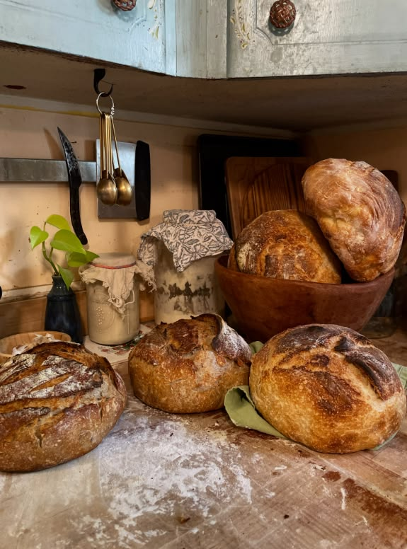

Seni Roti Tradisional
Mengenal Sourdough
MENGUNGKAP KEUNIKAN ROTI FERMENTASI ALAMI TANPA RAGI INSTAN
PELAJARI LEBIH LANJUT
MENGUNGKAP KEUNIKAN ROTI FERMENTASI ALAMI TANPA RAGI INSTAN
PELAJARI LEBIH LANJUTMengenal lebih dekat sejarah dan bahan dasar pembuatan roti tertua di dunia
Sourdough tidak menggunakan ragi instan pabrikan. Ia mengandalkan *starter*—campuran tepung dan air yang dibiarkan menangkap ragi liar dan bakteri baik dari udara secara alami selama berhari-hari.
Membutuhkan waktu 24 hingga 48 jam untuk proses fermentasi adonan. Proses lambat inilah yang memecah gluten dan menghasilkan cita rasa khas sedikit asam yang lezat.
Roti ini digemari para pecinta gaya hidup sehat
Sourdough Loaf
Resep rumahan klasikroti sourdough Mengandalkan ragi liar dan bakteri dari starter sourdough alami , bukan ragi komersial.
Sourdough Brioche
Roti Prancis yang kaya rasa, lembut, dan empuk yang menggunakan ragi alami dari starter sourdough, bukan ragi instan komersial.
Sourdough Rye Bread
Roti artisan yang lezat, padat, dan lembap yang menggabungkan tepung rye dengan fermentasi ragi liar.
Sourdough San Francisco
Roti khas San Francisco yang memiliki rasa asam yang khas dan tekstur yang unik, dihasilkan melalui proses fermentasi yang memakan waktu lama.
 Birotes Salados
Birotes Salados
Roti khas Meksiko yang difermentasi menggunakan adonan asam (sourdough) tradisional, memiliki kulit luar yang sangat renyah (crusty) serta bagian dalam yang lembut namun padat.
Mari melihat kelebihan dari roti sourdough
Proses fermentasi meningkatkan jumlah prebiotik dan probiotik yang membantu meningkatkan kesehatan usus. Berdasarkan studi, sourdough dari tepung gandum hitam terbukti dapat meningkatkan jumlah bakteri usus yang baik dibandingkan roti putih biasa.
Sebagai bagian dari diet Mediterania, konsumsi roti dari biji-bijian utuh dapat membantu menurunkan risiko penyakit jantung, diabetes, dan kanker, khususnya bagi orang dewasa yang lebih tua.
Pencernaan karbohidrat secara alami dapat memicu lonjakan gula darah. Sourdough membantu memperlambat proses pencernaan, sehingga membantu menjaga kadar glukosa darah dalam rentang yang sehat.
Bakteri asam laktat dalam adonan sourdough menghancurkan asam tertentu sehingga meningkatkan ketersediaan nutrisi penting seperti folat, kalium, dan magnesium yang dibutuhkan oleh sel, fungsi otot, jantung, serta pembentukan DNA.
Meskipun tidak sepenuhnya bebas gluten, penelitian menunjukkan bahwa proses fermentasi pada sourdough dapat mengubah enzim dalam biji dan berpotensi mengurangi reaksi negatif terhadap gluten.
Kandungan serat yang tinggi serta proses fermentasi (terutama jika menggunakan tepung gandum hitam) membantu menurunkan risiko penyakit jantung. Selain itu, bakteri asam laktat meningkatkan antioksidan untuk melindungi sel-sel tubuh dari kerusakan.
Proses fermentasi dapat menurunkan kandungan fitat (senyawa tumbuhan yang dapat menghambat penyerapan nutrisi). Penurunan asam fitat ini meningkatkan ketersediaan mineral, asam amino bebas, dan protein bagi tubuh.
Mengenal lebih dekat karakteristik roti sourdough

Menggunakan ragi alami (sourdough starter): Dibuat dari hasil fermentasi alami campuran tepung dan air yang berisi bakteri asam laktat (Lactobacillus) dan ragi liar.
Waktu fermentasi lama: Proses pembuatan memakan waktu lama, sering kali lebih dari 24 jam melalui long fermentation.
Kulit luar keras dan renyah (crust): Bagian kulitnya berwarna cokelat keemasan hingga cokelat tua, cukup garing, dan agak kenyal sehingga perlu sedikit tenaga saat dipotong.
Memiliki ear (telinga roti): Garis atau lipatan terbuka yang rekah di permukaan akibat proses penyayatan (scoring) sebelum dipanggang.
Berongga besar dan tidak merata (open crumb): Bagian dalam roti memiliki pori-pori atau lubang udara dengan ukuran yang cukup besar dan variatif akibat aktivitas gas dari mikroorganisme.
Tekstur kenyal dan lembut: Meski kulit luarnya keras, bagian remah di dalamnya terasa lembut dan kenyal.
Cita rasa khas sedikit asam: Memiliki rasa asam yang lembut (mirip yogurt atau fermentasi gandum), bukan rasa asam yang menusuk atau busuk.
Aroma fermentasi alami: Aromanya harum khas gandum bercampur sedikit aroma asam yang segar.
Gluten lebih terurai: Karena difermentasi lama, rantai gluten pada sourdough terurai sebagian sehingga lebih mudah dicerna oleh sebagian orang.
Indeks glikemik lebih rendah: Lebih ramah bagi pengendalian gula darah dibandingkan roti putih biasa.